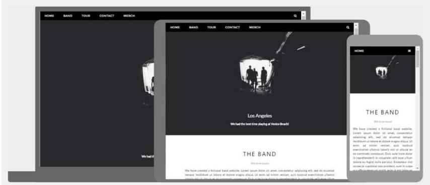

HTML Responsive Web Design
Responsive web design என்பது அனைத்து சாதனங்களிலும் நன்றாகத் தோற்றமளிக்கும் வலைப்பக்கங்களை உருவாக்குவதாகும்!
ஒரு responsive web design வெவ்வேறு திரை அளவுகள் மற்றும் viewport-களுக்கு தானாகவே சரியாகும்[citation:1].

ஒரு responsive web design வெவ்வேறு திரை அளவுகள் மற்றும் viewport-களுக்கு தானாகவே சரியாகும்
Responsive Web Design
Responsive Web Design என்றால் என்ன?
Responsive Web Design என்பது HTML மற்றும் CSS ஐப் பயன்படுத்தி ஒரு வலைத்தளத்தை தானாகவே மறுஅளவிடுதல், மறைத்தல், சுருக்குதல் அல்லது விரிவாக்குதல் ஆகும், இது அனைத்து சாதனங்களிலும் (desktop-கள், tablet-கள் மற்றும் phone-கள்) நன்றாகத் தோற்றமளிக்கும் வகையில் செய்யப்படுகிறது:
Viewport அமைத்தல்
ஒரு responsive வலைத்தளத்தை உருவாக்க, உங்கள் அனைத்து வலைப்பக்கங்களிலும் பின்வரும் <meta> குறிச்சொல்லைச் சேர்க்கவும்:
எடுத்துக்காட்டு
<meta name="viewport" content="width=device-width, initial-scale=1.0">இது உங்கள் பக்கத்தின் viewport ஐ அமைக்கும், இது பக்கத்தின் பரிமாணங்கள் மற்றும் அளவிடுதலைக் கட்டுப்படுத்த உலாவிக்கு வழிமுறைகளை வழங்கும்[citation:2].
viewport meta குறிச்சொல் இல்லாத ஒரு வலைப்பக்கத்தின் எடுத்துக்காட்டு மற்றும் viewport meta குறிச்சொல்லுடன் கூடிய அதே வலைப்பக்கம் இங்கே:

viewport meta குறிச்சொல் இல்லாத ஒரு வலைப்பக்கத்தின் எடுத்துக்காட்டு மற்றும் viewport meta குறிச்சொல்லுடன் கூடிய அதே வலைப்பக்கம்
உதவிக்குறிப்பு:
நீங்கள் இந்தப் பக்கத்தை ஒரு தொலைபேசி அல்லது டேப்லெட்டில் உலாவுகிறீர்கள் என்றால், வித்தியாசத்தைக் காண மேலே உள்ள இரண்டு இணைப்புகளையும் கிளிக் செய்யலாம்.
Responsive படங்கள்
Responsive படங்கள் என்பது எந்தவொரு உலாவி அளவிற்கும் சரியாக பொருந்தும் வகையில் அளவிடக்கூடிய படங்கள் ஆகும்.
width பண்புகளைப் பயன்படுத்துதல்
CSS width பண்பு 100% ஆக அமைக்கப்பட்டால், படம் responsive ஆக இருக்கும் மற்றும் மேலும் கீழும் அளவிடும்:
CSS width பண்பு 100% ஆக அமைக்கப்பட்டால், படம் responsive ஆக இருக்கும் மற்றும் மேலும் கீழும் அளவிடும்
எடுத்துக்காட்டு
<img src="img_girl.jpg" style="width:100%;">மேலே உள்ள எடுத்துக்காட்டில், படம் அதன் அசல் அளவை விட பெரிதாக அளவிடப்படலாம் என்பதைக் கவனிக்கவும். பல சந்தர்ப்பங்களில், max-width பண்புகளைப் பயன்படுத்துவது ஒரு சிறந்த தீர்வாக இருக்கும்.
max-width பண்புகளைப் பயன்படுத்துதல்
max-width பண்பு 100% ஆக அமைக்கப்பட்டால், படம் தேவைப்பட்டால் குறைக்கப்படும், ஆனால் அதன் அசல் அளவை விட பெரிதாக அளவிடப்படாது:
max-width பண்பு 100% ஆக அமைக்கப்பட்டால், படம் தேவைப்பட்டால் குறைக்கப்படும், ஆனால் அதன் அசல் அளவை விட பெரிதாக அளவிடப்படாது
எடுத்துக்காட்டு
<img src="img_girl.jpg" style="max-width:100%;height:auto;">உலாவி அகலத்தைப் பொறுத்து வெவ்வேறு படங்களைக் காட்டுதல்
HTML <picture> உறுப்பு வெவ்வேறு உலாவி சாளர அளவுகளுக்கு வெவ்வேறு படங்களை வரையறுக்க உங்களை அனுமதிக்கிறது.
கீழே உள்ள படம் அகலத்தைப் பொறுத்து எவ்வாறு மாறுகிறது என்பதைப் பார்க்க உலாவி சாளரத்தை மறுஅளவிடவும்:
கீழே உள்ள படம் அகலத்தைப் பொறுத்து எவ்வாறு மாறுகிறது என்பதைப் பார்க்க உலாவி சாளரத்தை மறுஅளவிடவும்
மலர்கள்
[படம் திரை அகலத்தின் அடிப்படையில் மாறுகிறது]
மொபைலில் சிறிய மலர் படம், டெஸ்க்டாபில் பெரிய மலர் படம்
எடுத்துக்காட்டு
<picture>
<source srcset="img_smallflower.jpg" media="(max-width: 600px)">
<source srcset="img_flowers.jpg" media="(max-width: 1500px)">
<source srcset="flowers.jpg">
<img src="img_smallflower.jpg" alt="Flowers">
</picture>Responsive உரை அளவு
உரை அளவை "vw" அலகுடன் அமைக்கலாம், இது "viewport width" என்று பொருள்[citation:1][citation:4].
அந்த வழியில் உரை அளவு உலாவி சாளரத்தின் அளவைப் பின்பற்றும்:
வணக்கம் உலகம்
உரை அளவு எவ்வாறு அளவிடுகிறது என்பதைப் பார்க்க உலாவி சாளரத்தை மறுஅளவிடவும்.
எடுத்துக்காட்டு
<h1 style="font-size:10vw">Hello World</h1>Viewport என்பது உலாவி சாளர அளவு. 1vw = viewport அகலத்தில் 1%. viewport 50cm அகலமாக இருந்தால், 1vw என்பது 0.5cm[citation:1].
Viewport அலகுகளைப் புரிந்துகொள்ளுதல்:
"vw" அலகு CSS இல் உள்ள பல viewport-அடிப்படையிலான அலகுகளில் ஒன்றாகும். மற்ற அலகுகளில் vh (viewport height), vmin (viewport இன் சிறிய பரிமாணத்தில் 1%) மற்றும் vmax (viewport இன் பெரிய பரிமாணத்தில் 1%) ஆகியவை அடங்கும்[citation:4][citation:8]. உண்மையான responsive வடிவமைப்புகளை உருவாக்க இந்த அலகுகள் அவசியம்.
Media Queries
உரை மற்றும் படங்களை மறுஅளவிடுவதற்கு கூடுதலாக, responsive வலைப்பக்கங்களில் media queries ஐப் பயன்படுத்துவதும் பொதுவானது.
Media queries மூலம் வெவ்வேறு உலாவி அளவுகளுக்கு முற்றிலும் வெவ்வேறு பாணிகளை வரையறுக்கலாம்.
எடுத்துக்காட்டு: பெரிய திரைகளில் கீழே உள்ள மூன்று div உறுப்புகள் கிடைமட்டமாக காட்சியளிக்கும் மற்றும் சிறிய திரைகளில் செங்குத்தாக அடுக்கப்படும் என்பதைப் பார்க்க உலாவி சாளரத்தை மறுஅளவிடவும்:
இடது பட்டி
இடது பட்டிக்கான உள்ளடக்கம்
முதன்மை உள்ளடக்கம்
முதன்மை உள்ளடக்கப் பகுதி
வலது உள்ளடக்கம்
வலது பக்கப் பட்டி உள்ளடக்கம்
சிறிய திரைகளில் நெடுவரிசைகள் அடுக்கப்படுவதைப் பார்க்க உலாவியை மறுஅளவிடவும்
எடுத்துக்காட்டு
<style>
.left, .right {
float: left;
width: 20%; /* இயல்புநிலையில் அகலம் 20% */
}
.main {
float: left;
width: 60%; /* இயல்புநிலையில் அகலம் 60% */
}
/* 800px இல் ஒரு breakpoint சேர்க்க media query ஐப் பயன்படுத்தவும்: */
@media screen and (max-width: 800px) {
.left, .main, .right {
width: 100%; /* viewport 800px அல்லது சிறியதாக இருக்கும் போது அகலம் 100% */
}
}
</style>உதவிக்குறிப்பு:
Media Queries மற்றும் Responsive Web Design பற்றி மேலும் அறிய, எங்கள் RWD டுடோரியலைப் படிக்கவும்.
Responsive வலைப்பக்கம் - முழு எடுத்துக்காட்டு
ஒரு responsive வலைப்பக்கம் பெரிய டெஸ்க்டாப் திரைகளிலும் சிறிய மொபைல் தொலைபேசிகளிலும் நன்றாகத் தோற்றமளிக்க வேண்டும்.
sk Spaces பற்றி எப்போதாவது கேள்விப்பட்டிருக்கிறீர்களா?
இங்கே நீங்கள் புதிதாக உங்கள் வலைத்தளத்தை உருவாக்கலாம் அல்லது ஒரு டெம்ப்ளேட்டைப் பயன்படுத்தலாம்.
* credit card தேவையில்லை
Responsive Web Design - Frameworks
அனைத்து பிரபலமான CSS Frameworks responsive design ஐ வழங்குகின்றன.
அவை இலவசம் மற்றும் பயன்படுத்த எளிதானது.
W3.CSS
W3.CSS என்பது நவீன CSS framework ஆகும், இது இயல்பாகவே டெஸ்க்டாப், டேப்லெட் மற்றும் மொபைல் வடிவமைப்புக்கு ஆதரவை வழங்குகிறது.
W3.CSS ஒத்த CSS frameworks-ஐ விட சிறியது மற்றும் வேகமானது.
W3.CSS jQuery அல்லது வேறு எந்த JavaScript நூலகத்திலிருந்தும் சுயாதீனமாக இருக்க வடிவமைக்கப்பட்டுள்ளது.
W3.CSS சோதனை
பக்கத்தை மறுஅளவிடவும், responsiveness ஐப் பார்க்கவும்!
லண்டன்
லண்டன் இங்கிலாந்தின் தலைநகரம்.
இது ஐக்கிய இராச்சியத்தில் மிக அதிக மக்கள் தொகை கொண்ட நகரமாகும், 13 மில்லியனுக்கும் அதிகமான மக்கள் தொகை கொண்ட பெருநகரப் பகுதியுடன்.
பாரிஸ்
பாரிஸ் பிரான்ஸின் தலைநகரம்.
பாரிஸ் பகுதி ஐரோப்பாவில் மிகப்பெரிய மக்கள் தொகை மையங்களில் ஒன்றாகும், 12 மில்லியனுக்கும் அதிகமான மக்கள் தொகையுடன்.
டோக்கியோ
டோக்கியோ ஜப்பானின் தலைநகரம்.
இது பெரிய டோக்கியோ பகுதியின் மையமாகும், மேலும் உலகில் மிக அதிக மக்கள் தொகை கொண்ட பெருநகரப் பகுதியாகும்.
எடுத்துக்காட்டு
<!DOCTYPE html>
<html>
<head>
<title>W3.CSS</title>
<meta name="viewport" content="width=device-width, initial-scale=1">
<link rel="stylesheet" href="https://www.jassifteam.com/w3css/4/w3.css">
</head>
<body>
<div class="w3-container w3-green">
<h1>sk Demo</h1>
<p>இந்த responsive பக்கத்தை மறுஅளவிடவும்!</p>
</div>
<div class="w3-row-padding">
<div class="w3-third">
<h2>லண்டன்</h2>
<p>லண்டன் இங்கிலாந்தின் தலைநகரம்.</p>
<p>இது ஐக்கிய இராச்சியத்தில் மிக அதிக மக்கள் தொகை கொண்ட நகரமாகும்,
13 மில்லியனுக்கும் அதிகமான மக்கள் தொகை கொண்ட பெருநகரப் பகுதியுடன்.</p>
</div>
<div class="w3-third">
<h2>பாரிஸ்</h2>
<p>பாரிஸ் பிரான்ஸின் தலைநகரம்.</p>
<p>பாரிஸ் பகுதி ஐரோப்பாவில் மிகப்பெரிய மக்கள் தொகை மையங்களில் ஒன்றாகும்,
12 மில்லியனுக்கும் அதிகமான மக்கள் தொகையுடன்.</p>
</div>
<div class="w3-third">
<h2>டோக்கியோ</h2>
<p>டோக்கியோ ஜப்பானின் தலைநகரம்.</p>
<p>இது பெரிய டோக்கியோ பகுதியின் மையமாகும்,
மேலும் உலகில் மிக அதிக மக்கள் தொகை கொண்ட பெருநகரப் பகுதியாகும்.</p>
</div>
</div>
</body>
</html>W3.CSS பற்றி மேலும் அறிய, எங்கள் W3.CSS டுடோரியலைப் படிக்கவும்.
பூட்ஸ்ட்ராப்
மற்றொரு பிரபலமான CSS framework பூட்ஸ்ட்ராப் ஆகும்:
எடுத்துக்காட்டு
<!DOCTYPE html>
<html lang="en">
<head>
<title>Bootstrap 5 Example</title>
<meta charset="utf-8">
<meta name="viewport" content="width=device-width, initial-scale=1">
<link href="https://cdn.jsdelivr.net/npm/bootstrap@5.2.3/dist/css/bootstrap.min.css" rel="stylesheet">
<script src="https://cdn.jsdelivr.net/npm/bootstrap@5.2.3/dist/js/bootstrap.bundle.min.js"></script>
</head>
<body>
<div class="container-fluid p-5 bg-primary text-white text-center">
<h1>எனது முதல் பூட்ஸ்ட்ராப் பக்கம்</h1>
<p>இந்த responsive பக்கத்தை மறுஅளவிடவும், விளைவைப் பார்க்கவும்!</p>
</div>
<div class="container mt-5">
<div class="row">
<div class="col-sm-4">
<h3>நெடுவரிசை 1</h3>
<p>லொரேம் இப்சம்...</p>
</div>
<div class="col-sm-4">
<h3>நெடுவரிசை 2</h3>
<p>லொரேம் இப்சம்...</p>
</div>
<div class="col-sm-4">
<h3>நெடுவரிசை 3</h3>
<p>லொரேம் இப்சம்...</p>
</div>
</div>
</div>பூட்ஸ்ட்ராப் பற்றி மேலும் அறிய, எங்கள் பூட்ஸ்ட்ராப் டுடோரியலுக்குச் செல்லவும்.
பயிற்சி
viewport-இன் சதவீதமாக உரையை அளவிடும் CSS எழுத்துரு அளவு அலகு உள்ளது, அந்த அலகு எது?
கற்றல் சரிபார்ப்பு:
சரியான பதில் vw (viewport width). இந்த அலகு viewport-இன் அகலத்தில் 1% ஐக் குறிக்கிறது. மற்ற viewport-அடிப்படையிலான அலகுகளில் vh (viewport height), vmin (viewport-இன் சிறிய பரிமாணத்தில் 1%) மற்றும் vmax (viewport-இன் பெரிய பரிமாணத்தில் 1%) ஆகியவை அடங்கும்[citation:4][citation:8]. உண்மையான responsive typography மற்றும் layouts உருவாக்க இந்த அலகுகள் அவசியம்.
Viewport அலகுகள் சோதனை
வெவ்வேறு viewport அலகுகள் எவ்வாறு செயல்படுகின்றன என்பதைப் பார்க்க உங்கள் உலாவி சாளரத்தை மறுஅளவிட முயற்சிக்கவும்:
(சிறிய viewport பரிமாணத்தில் 50%)
vmin = viewport-இன் சிறிய பரிமாணத்தில் 1% (அகலம் அல்லது உயரம்)
vmax = viewport-இன் பெரிய பரிமாணத்தில் 1%[citation:8]